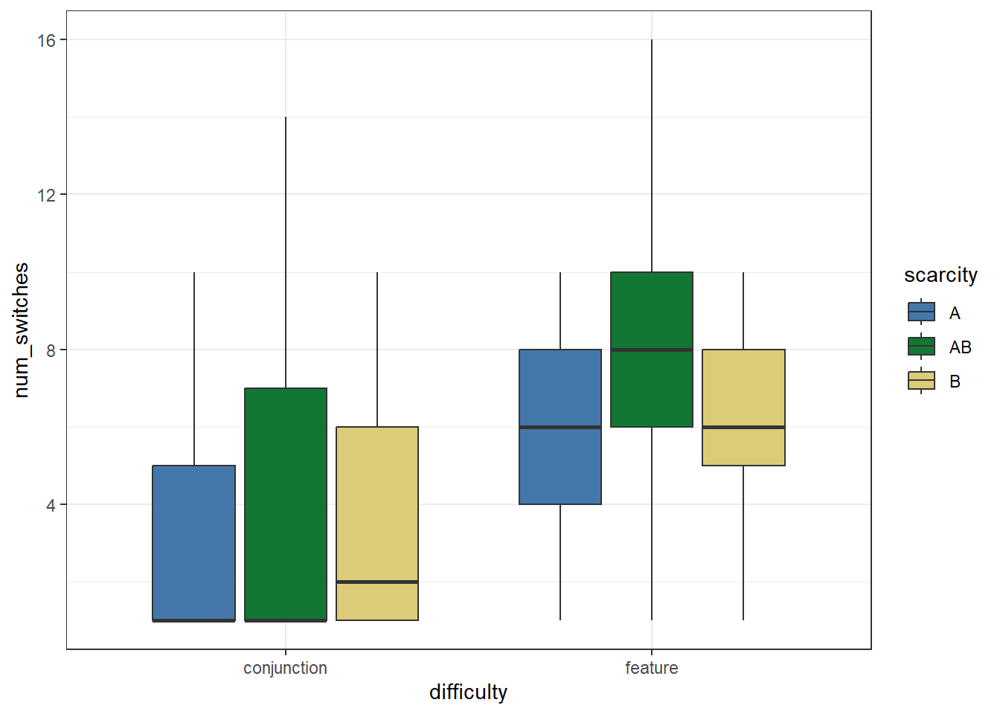
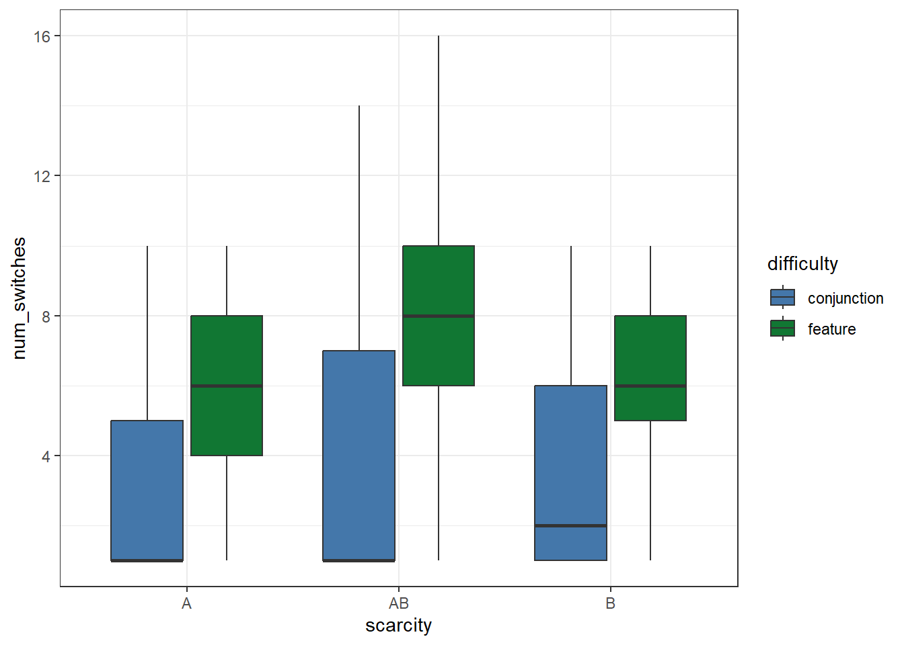
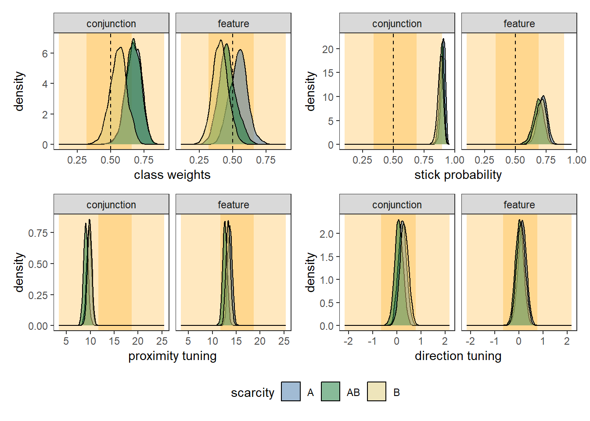
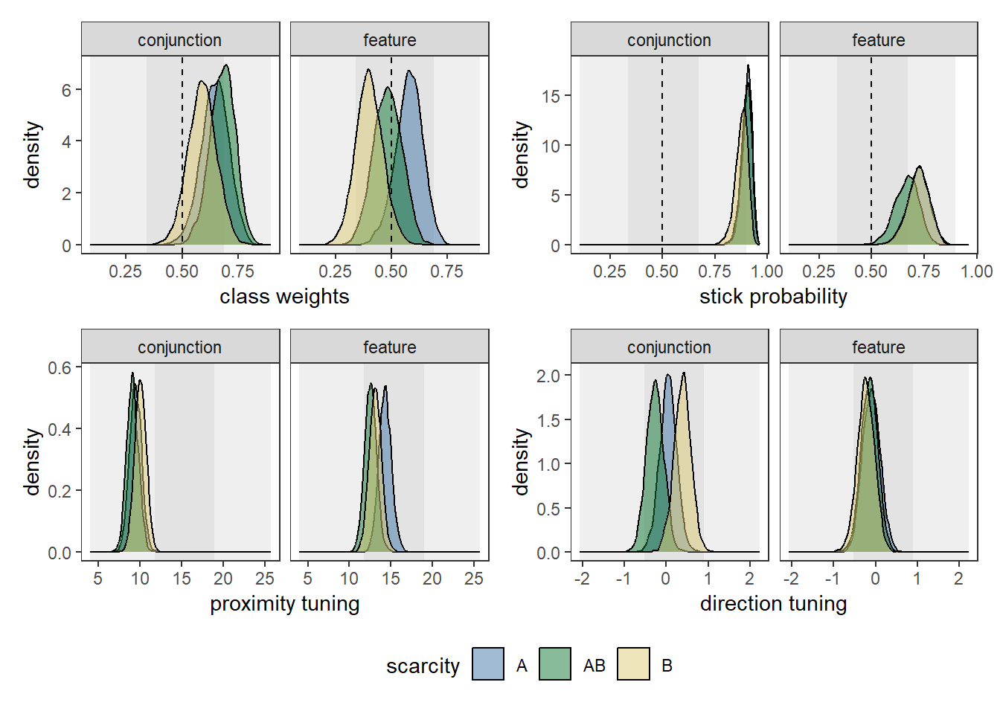
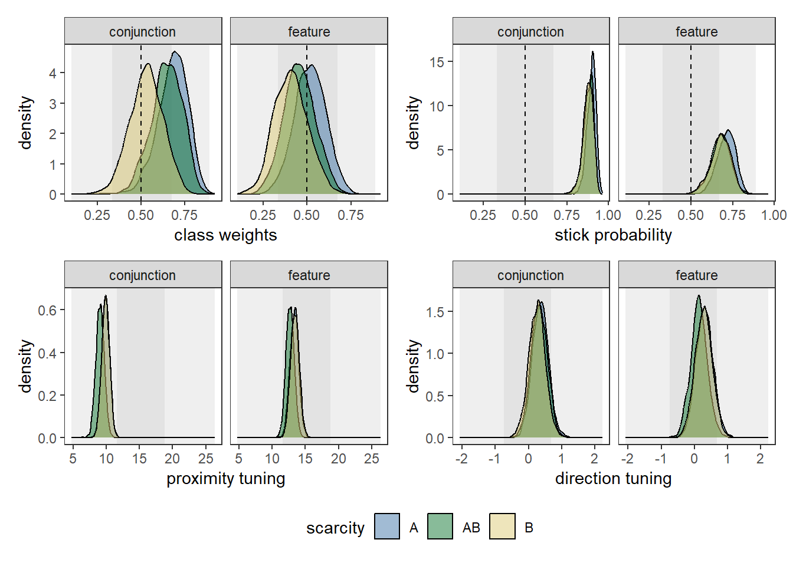
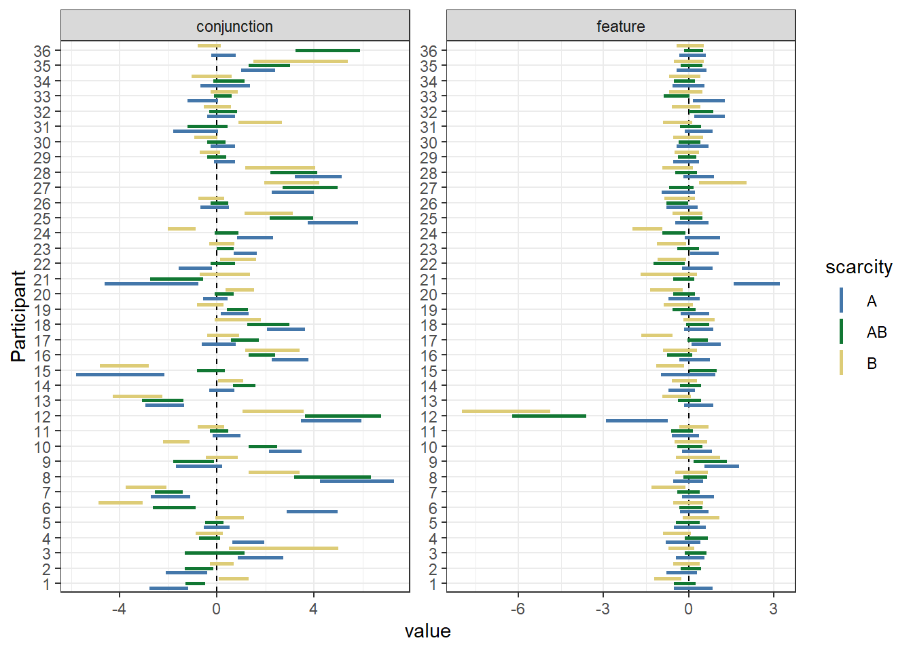
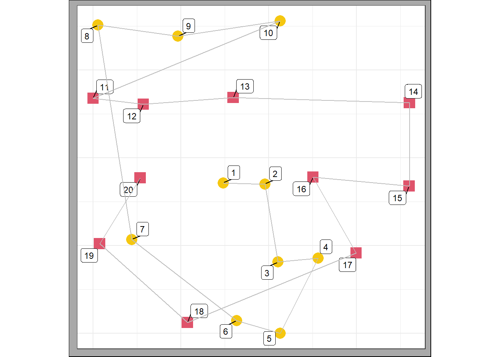
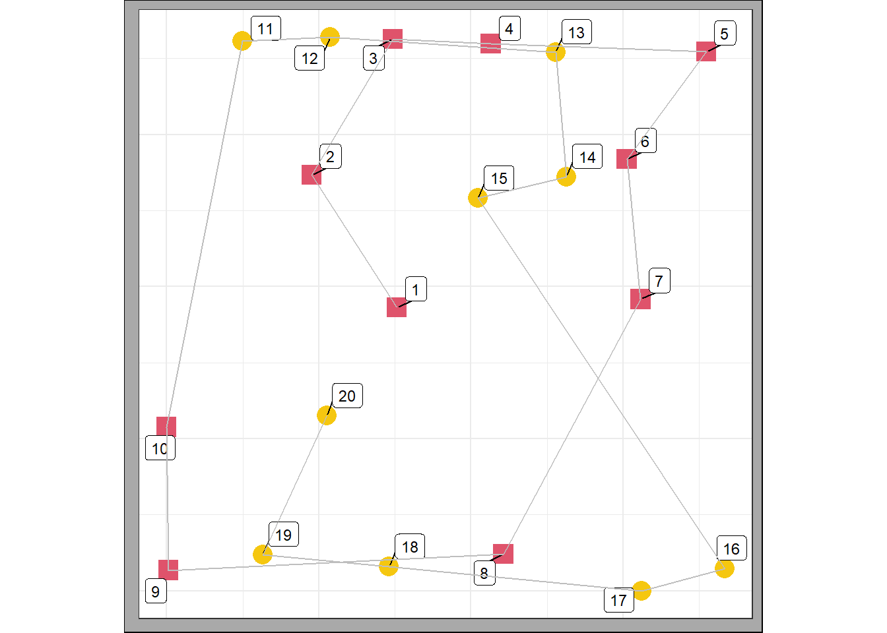
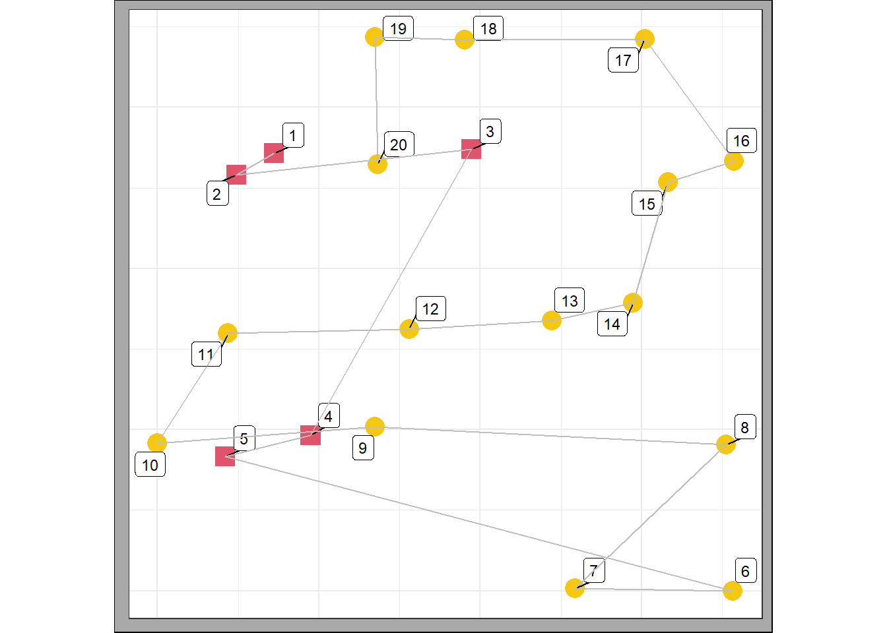
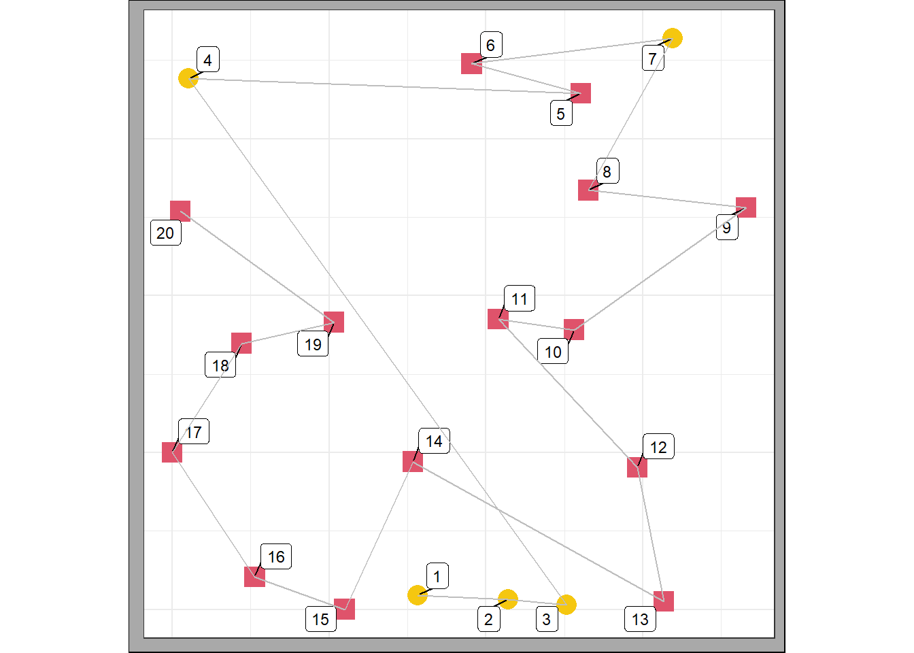

# load libraries
library(tidyverse)
library(cmdstanr)
library(tidybayes)
library(patchwork)
options(mc.cores = parallel::detectCores())
options(digits=2)
# set ggplot2 theme
theme_set(theme_bw())
# load function scripts
source("../functions/import_data.R")
source("../functions/prep_data.R")
source("../functions/plot_model.R")
source("../functions/post_functions.R")
source("../functions/plot_data.R")
# set experiment name and save folder
exptname <- "real_data"
savefolder <- paste0("../output/", exptname, "/")4 Fit model to real data
Initial data processing
First we read in the data and generate d_list and d_found, as well as demographic information.
Note that the import_data function will remove any terminated trials (i.e. due to selecting a distractor) and thus these trials are not analysed.
# This is not run by default as importing data takes some time.
# However, the pre-compiled CSVs are available in the save folder.
d <- import_data("hughes2024")
d_found <- d$found
d_stim <- d$stim
age <- as.data.frame(unlist(d$age))
gender <- as.data.frame(unlist(d$gender))Excluded participants
- Participants 1-4 were excluded from final data analysis because we accidentally ran them on a version of the experiment that did not include a practice trial.
- Participant 26 did not complete the full experiment and therefore their data was excluded.
- Participant 37 had a case where a target selection was mislabelled as belonging to another trial by the experimental program. In the interests of caution, we decided to exclude this dataset.
- Participant 43 took us over the required sample size of 36, so was not used in the final analysis.
We note that due to experimenter error, a small number of participants were mislabelled in the original raw data (participant 11 was originally labelled 10, participant 12 was originally labelled 11 and participant 22 was originally labelled 21). These errors have been fixed in the raw data, but otherwise no changes have been made to the original files.
Checking inter-target selection times
One of our pre-registered exclusion criteria is that any trial containing an inter-target selection time of more than 5s will be removed. We find 59 cases where this happens, in 55 unique trials.
d_rt <- d_found %>%
mutate(rt_lag = lag(rt),
rt_lag = if_else(is.na(rt_lag), 0, rt_lag),
rt_lag_diff = rt - rt_lag)
# looking for inter-target selection times greater than 5s
d_rt_longrt <- d_rt %>%
filter(rt_lag_diff > 5)
# which unique trials are these?
unique_trials_to_remove <- unique(d_rt_longrt$trial)
# filter d_found and d_stim to take this into account
# also now need to renumber for modelling
d_found <- d_found %>%
filter(!trial %in% unique_trials_to_remove) %>%
group_by(trial) %>%
mutate(trial = cur_group_id()) %>%
ungroup()
d_stim <- d_stim %>%
filter(!trial %in% unique_trials_to_remove) %>%
group_by(trial) %>%
mutate(trial = cur_group_id()) %>%
ungroup()Save our clean data.
write_csv(d_found, paste0(savefolder, "d_found.csv"))
write_csv(d_stim, paste0(savefolder, "d_stim.csv"))
write_csv(age, paste0(savefolder, "d_age.csv"))
write_csv(gender, paste0(savefolder, "d_gender.csv"))We can load a pre-computed version of the data, with the relevant excluded trials already removed.
d_found <- read_csv(paste0(savefolder, "d_found.csv"))
d_stim <- read_csv(paste0(savefolder, "d_stim.csv"))
d_age <- read_csv(paste0(savefolder, "d_age.csv"))
d_gender <- read_csv(paste0(savefolder, "d_gender.csv"))Some data checking
# relabelling things for easier checking
d_found_check <- d_found %>%
mutate(
difficulty = case_match(
condition,
1 ~ "conjunction",
2 ~ "conjunction",
3 ~ "conjunction",
4 ~ "feature",
5 ~ "feature",
6 ~ "feature"
),
scarcity = case_match(
condition,
1 ~ "A",
2 ~ "AB",
3 ~ "B",
4 ~ "A",
5 ~ "AB",
6 ~ "B"
)
)
# How many trials does each person have?
d_found_check %>%
group_by(person, difficulty, scarcity) %>%
summarise(total_trials = length(unique(trial))) -> total_trials
# How many targets of each class did people find?
d_found_check %>%
count(person, difficulty, scarcity) -> total_foundEvery person in our dataset has at least 5 trials per condition, and therefore all meet the inclusion criteria for the study.
Demographic data
# age
mean_age <- mean(unlist(d_age))
sd_age <- sd(unlist(d_age))
# gender
gender <- as_tibble(unlist(d_gender))
gender_count <- gender %>%
mutate(gender = str_to_upper(value)) %>%
count(gender)
tot_participants <- nrow(gender)Participants had a mean age of 23.88 (SD = 4.17). There were 36 participants, with 28 identifying as female (77.78%).
Aggregate descriptive statistics
# Maximum run length
d_found_check %>%
group_by(person, difficulty, scarcity, trial) %>%
mutate(switch = ifelse(item_class != lag(item_class), 1, 0),
switch = ifelse(is.na(switch), 1, switch)) %>%
filter(switch != 0) %>%
mutate(lead_found = lead(found),
lead_found_new = ifelse(is.na(lead_found), 21, lead_found)) %>%
mutate(diff = lead_found_new - found) %>%
summarise(max_run_length = max(diff)) -> max_run_length
ggplot(max_run_length, aes(scarcity, max_run_length, fill = difficulty)) + geom_boxplot()
# Number of runs
d_found_check %>%
group_by(person, difficulty, scarcity, trial) %>%
mutate(switch = ifelse(item_class != lag(item_class), 1, 0)) %>%
summarise(num_switches = sum(switch, na.rm = TRUE)) -> total_switches
ggplot(total_switches, aes(scarcity, num_switches, fill = difficulty)) + geom_boxplot() 
In line with previous research, we can see that conjunction trials tend to have a higher maximum run length and a lower number of switches between target types compared to feature trials. Note that because the different scarcity conditions have different ratios of target types in them, it doesn’t really make sense to compare across levels of scarcity: e.g. the ‘AB’ conditions will necessarily have a lower maximum run length because the maximum number of targets of one type is 10, compared to the ‘A’ and ‘B’ conditions where one target type will have 15 exemplars on each trial.
Prepare and fit model
Here we prepare and fit the model. Note that this process is slow, so this code is set to eval = FALSE as default.
d_list <- prep_data_for_stan(d_found, d_stim, c("spatial", "item_class"))
# most priors should be the same for different 1.x model versions
d_list <- add_priors_to_d_list(d_list)
mod <- cmdstan_model("../models/multi_level/foraging_model1.stan")
m <- mod$sample(data = d_list, chains = 4, parallel_chains = 4)
m$save_object(paste0("../output/", exptname, "/foraging_real.RDS"))We read in our pre-fit model, and extract posterior draws.
m <- readRDS(paste0("../output/", exptname, "/foraging_real.RDS"))
cl <- unique(d_found$condition)
post <- extract_post(m, d_found, cl)H1: the effect of scarcity
Our main hypothesis (H1) is that participants will show a preference for selecting scarce targets. We will take \(b_A(equal)\) as our baseline condition and compare this to \(b_A(scarce_A)\) and \(b_A(scarce_B)\).
First, we need to label our conditions appropriately so we know what each one means.
post_labelled <- post$fixed %>%
mutate(
difficulty = case_match(
condition,
"1" ~ "conjunction",
"2" ~ "conjunction",
"3" ~ "conjunction",
"4" ~ "feature",
"5" ~ "feature",
"6" ~ "feature"
),
scarcity = case_match(
condition,
"1" ~ "A",
"2" ~ "AB",
"3" ~ "B",
"4" ~ "A",
"5" ~ "AB",
"6" ~ "B"
)
)plot_model_fixed(post, m, d_found, cl) 
ggsave(ggsave("../plots/real_data.pdf", width = 8, height = 4))Our main hypothesis
We predicted that participants will show a preference for scarce targets, marginalising over the feature and conjunction conditions.
# conditions labelled A are where A is scarce
condA <- post_labelled %>%
filter(scarcity == "A")
# conditions labelled AB are equal
condequal <- post_labelled %>%
filter(scarcity == "AB")
# conditions labelled B are where B is scarce
condB <- post_labelled %>%
filter(scarcity == "B")
sum(condA$bA - condequal$bA > 0) / nrow(condequal)[1] 0.67sum(condequal$bA - condB$bA > 0) / nrow(condequal)[1] 0.82We do not find support for this hypothesis: upon examining the posterior distributions for the difference between these parameters, we do not see clear evidence of separation (the probability of the differences being greater than zero is not 0.99 or larger).
The effect of scarcity in the feature condition
# conditions labelled A are where A is scarce
condA <- post_labelled %>%
filter(scarcity == "A", difficulty == "feature")
# conditions labelled AB are equal
condequal <- post_labelled %>%
filter(scarcity == "AB", difficulty == "feature")
# conditions labelled B are where B is scarce
condB <- post_labelled %>%
filter(scarcity == "B", difficulty == "feature")
sum(condA$bA - condequal$bA > 0) / nrow(condequal)[1] 0.81sum(condequal$bA - condB$bA > 0) / nrow(condequal)[1] 0.73The effect in the feature condition trends in the expected direction (scarcity condition A has a slightly higher average \(b_A\) compared to the equal condition, consistent with people being slightly more likely to pick the scarcer target A, and scarcity condition B has a slightly lower average \(b_A\) compared to the equal condition, consistent with people being slightly less likely to pick the more common target A). However, the evidence does not meet our criteria of the probability needing to be 0.99 or greater.
The effect of scarcity in the conjunction condition
# conditions labelled A are where A is scarce
condA <- post_labelled %>%
filter(scarcity == "A", difficulty == "conjunction")
# conditions labelled AB are equal
condequal <- post_labelled %>%
filter(scarcity == "AB", difficulty == "conjunction")
# conditions labelled B are where B is scarce
condB <- post_labelled %>%
filter(scarcity == "B", difficulty == "conjunction")
sum(condA$bA - condequal$bA > 0) / nrow(condequal)[1] 0.52sum(condequal$bA - condB$bA > 0) / nrow(condequal)[1] 0.92Here, we can see that the stimuli are having a strong effect on choice preference: in the equal condition, people strongly preferred target A (the red squares). This effect seems unlikely to relate to differences in salience of colours (as the red and green used in the feature condition did not seem to lead to bias) but may reflect a difference in shape salience, or a learning effect (circles were used as targets in all trials, so perhaps participants developed a preference for the less common shape overall). There is a relatively strong effect in condition B of participants being less likely to pick the more common target A, but this again does not meet our evidence criteria. There is almost no difference between condition A and AB (equal), perhaps due to ceiling effects.
H1: exploratory analysis
We did not find strong evidence in favour of our hypothesis, so we will carry out exploratory analysis.
Counterbalancing
First, we will look at whether one of the counterbalanced conditions shows a scarcity effect but not the other. Participants either completed the feature condition first, or the conjunction condition.
Feature-first
feature_first <- c(2,4,16,17,18,19,20,21,22,23,24,34,35,36)
# filter d_found and d_stim to take this into account
# also now need to renumber for modelling - this does trial numbers
d_found_feat <- d_found %>%
filter(person %in% feature_first) %>%
group_by(trial) %>%
mutate(trial = cur_group_id()) %>%
ungroup()
d_stim_feat <- d_stim %>%
filter(person %in% feature_first) %>%
group_by(trial) %>%
mutate(trial = cur_group_id()) %>%
ungroup()
# this renumbers the participants
d_found_feat$person <- as_factor(d_found_feat$person)
levels(d_found_feat$person) <- 1:length(levels(d_found_feat$person))
d_found_feat$person <- as.numeric(d_found_feat$person)
d_stim_feat$person <- as_factor(d_stim_feat$person)
levels(d_stim_feat$person) <- 1:length(levels(d_stim_feat$person))
d_stim_feat$person <- as.numeric(d_stim_feat$person)d_list_feat <- prep_data_for_stan(d_found_feat, d_stim_feat, c("spatial", "item_class"))
# most priors should be the same for different 1.x model versions
d_list_feat <- add_priors_to_d_list(d_list_feat)
mod <- cmdstan_model("../models/multi_level/foraging_model1.stan")
m_feat <- mod$sample(data = d_list_feat, chains = 4, parallel_chains = 4)
m_feat$save_object(paste0("../output/", exptname, "/foraging_real_feat.RDS"))m_feat <- readRDS(paste0("../output/", exptname, "/foraging_real_feat.RDS"))
cl <- unique(d_found_feat$condition)
post_feat <- extract_post(m_feat, d_found_feat, cl)
post_feat_labelled <- post_feat$fixed %>%
mutate(
difficulty = case_match(
condition,
"1" ~ "conjunction",
"2" ~ "conjunction",
"3" ~ "conjunction",
"4" ~ "feature",
"5" ~ "feature",
"6" ~ "feature"
),
scarcity = case_match(
condition,
"1" ~ "A",
"2" ~ "AB",
"3" ~ "B",
"4" ~ "A",
"5" ~ "AB",
"6" ~ "B"
)
)# conditions labelled A are where A is scarce
condA <- post_feat_labelled %>%
filter(scarcity == "A")
# conditions labelled AB are equal
condequal <- post_feat_labelled %>%
filter(scarcity == "AB")
# conditions labelled B are where B is scarce
condB <- post_feat_labelled %>%
filter(scarcity == "B")
sum(condA$bA - condequal$bA > 0) / nrow(condequal)[1] 0.6sum(condequal$bA - condB$bA > 0) / nrow(condequal)[1] 0.84plot_model_fixed(post_feat, m_feat, d_found_feat, cl) 
Conjunction-first
conj_first <- c(1,3,5,6,7,8,9,10,11,12,13,14,15,25,26,27,28,29,30,31,32,33)
# filter d_found and d_stim to take this into account
# also now need to renumber for modelling - this does trial numbers
d_found_conj <- d_found %>%
filter(person %in% conj_first) %>%
group_by(trial) %>%
mutate(trial = cur_group_id()) %>%
ungroup()
d_stim_conj <- d_stim %>%
filter(person %in% conj_first) %>%
group_by(trial) %>%
mutate(trial = cur_group_id()) %>%
ungroup()
# this renumbers the participants
d_found_conj$person <- as_factor(d_found_conj$person)
levels(d_found_conj$person) <- 1:length(levels(d_found_conj$person))
d_found_conj$person <- as.numeric(d_found_conj$person)
d_stim_conj$person <- as_factor(d_stim_conj$person)
levels(d_stim_conj$person) <- 1:length(levels(d_stim_conj$person))
d_stim_conj$person <- as.numeric(d_stim_conj$person)d_list_conj <- prep_data_for_stan(d_found_conj, d_stim_conj, c("spatial", "item_class"))
# most priors should be the same for different 1.x model versions
d_list_conj <- add_priors_to_d_list(d_list_conj)
mod <- cmdstan_model("../models/multi_level/foraging_model1.stan")
m_conj <- mod$sample(data = d_list_conj, chains = 4, parallel_chains = 4)
m_conj$save_object(paste0("../output/", exptname, "/foraging_real_conj.RDS"))m_conj <- readRDS(paste0("../output/", exptname, "/foraging_real_conj.RDS"))
cl <- unique(d_found_conj$condition)
post_conj <- extract_post(m_conj, d_found_conj, cl)
post_conj_labelled <- post_conj$fixed %>%
mutate(
difficulty = case_match(
condition,
"1" ~ "conjunction",
"2" ~ "conjunction",
"3" ~ "conjunction",
"4" ~ "feature",
"5" ~ "feature",
"6" ~ "feature"
),
scarcity = case_match(
condition,
"1" ~ "A",
"2" ~ "AB",
"3" ~ "B",
"4" ~ "A",
"5" ~ "AB",
"6" ~ "B"
)
)# conditions labelled A are where A is scarce
condA <- post_conj_labelled %>%
filter(scarcity == "A")
# conditions labelled AB are equal
condequal <- post_conj_labelled %>%
filter(scarcity == "AB")
# conditions labelled B are where B is scarce
condB <- post_conj_labelled %>%
filter(scarcity == "B")
sum(condA$bA - condequal$bA > 0) / nrow(condequal)[1] 0.65sum(condequal$bA - condB$bA > 0) / nrow(condequal)[1] 0.72plot_model_fixed(post_conj, m_conj, d_found_conj, cl) 
Overall, it did not seem to matter whether participants completed the feature or the conjunction conditions first: there is perhaps a hint that any scarcity effects seen are a little stronger for the initial conditions (i.e. feature blocks for the feature first group, and conjunction blocks for the conjunction first group) but as before, the differences do not meet our evidence threshold.
Participant-level analysis
Our other planned exploratory analysis involves assessing the extent to which individual participants may show a scarcity bias.
plot_model_random(post)
ggsave(ggsave("../plots/random_effects.pdf", width = 8, height = 8))Saving 7 x 5 in imageThe random effects for \(bA\) for each person suggest that there is a lot more variability between participants in the conjunction condition compared to the feature condition.
We can also see some interesting individual patterns e.g. participant 12 shows a very strong preference for target type A in the conjunction condition compared to others, and a very strong preference for target type B in the feature condition compared to others. This is because they show very consistent run-like behaviour, even in the feature condition, and have a very stable strategy.
# An example of an AB feature trial for participant 12.
plot_a_trial(d_stim, d_found, trial = 682)
# An example of an AB conjunction trial for participant 12.
# Note the swapping of the preferred target type.
plot_a_trial(d_stim, d_found, trial = 655)
post_random <- post$random %>%
mutate(
difficulty = case_match(
condition,
"1" ~ "conjunction",
"2" ~ "conjunction",
"3" ~ "conjunction",
"4" ~ "feature",
"5" ~ "feature",
"6" ~ "feature"
),
scarcity = case_match(
condition,
"1" ~ "A",
"2" ~ "AB",
"3" ~ "B",
"4" ~ "A",
"5" ~ "AB",
"6" ~ "B"
)
)
ppt_tibble <- tibble(
ppt = numeric(),
test1 = numeric(),
test2 = numeric())
for (i in 1:36){
# conditions labelled A are where A is scarce
condA_r <- post_random %>%
filter(scarcity == "A", person == i)
# conditions labelled AB are equal
condequal_r <- post_random %>%
filter(scarcity == "AB", person == i)
# conditions labelled B are where B is scarce
condB_r <- post_random %>%
filter(scarcity == "B", person == i)
ppt_condA <- condA$bA + condA_r$uA
ppt_condequal <- condequal$bA + condequal_r$uA
ppt_condB <- condB$bA + condB_r$uA
ppt <- i
test1 <- sum(ppt_condA - ppt_condequal > 0) / nrow(condequal)
test2 <- sum(ppt_condequal - ppt_condB > 0) / nrow(condequal)
new_row <- tibble(ppt, test1, test2)
ppt_tibble <- bind_rows(ppt_tibble, new_row)
}
## do we have any participants who show a scarcity bias?
ppt_tibble %>%
filter(test1 > 0.90, test2 > 0.90)# A tibble: 1 × 3
ppt test1 test2
<dbl> <dbl> <dbl>
1 24 0.970 0.978We see one participant (24) who comes close to meeting our evidence criteria, but overall no evidence for a subgroup effect.
Conjunction condition only, participant-level analysis
As there seems to be more evidence for variability in the conjunction condition, we can see if there are any subgroups of participants who show scarcity biases in conjunction trials.
ppt_tibble_conj <- tibble(
ppt = numeric(),
test1 = numeric(),
test2 = numeric())
for (i in 1:36){
# conditions labelled A are where A is scarce
condA_r <- post_random %>%
filter(scarcity == "A", person == i, difficulty == "conjunction")
# conditions labelled AB are equal
condequal_r <- post_random %>%
filter(scarcity == "AB", person == i, difficulty == "conjunction")
# conditions labelled B are where B is scarce
condB_r <- post_random %>%
filter(scarcity == "B", person == i, difficulty == "conjunction")
ppt_condA <- condA$bA + condA_r$uA
ppt_condequal <- condequal$bA + condequal_r$uA
ppt_condB <- condB$bA + condB_r$uA
ppt <- i
test1 <- sum(ppt_condA - ppt_condequal > 0) / nrow(condequal)
test2 <- sum(ppt_condequal - ppt_condB > 0) / nrow(condequal)
new_row <- tibble(ppt, test1, test2)
ppt_tibble_conj <- bind_rows(ppt_tibble_conj, new_row)
}
## do we have any participants who show a scarcity bias?
ppt_tibble_conj %>%
filter(test1 > 0.90, test2 > 0.90)# A tibble: 4 × 3
ppt test1 test2
<dbl> <dbl> <dbl>
1 6 1 0.999
2 10 0.940 1
3 24 0.972 0.999
4 25 0.981 0.928There are slightly more participants who show some inclination towards a scarcity bias in the conjunction condition (although most do not meet the strict evidence threshold, and it remains a small group). Participant 6 is perhaps the strongest evidence.
# An example of an A conjunction trial for participant 6.
plot_a_trial(d_stim, d_found, trial = 293)
# An example of an B conjunction trial for participant 6.
# Note the swapping of preference to the scarcer target type.
plot_a_trial(d_stim, d_found, trial = 309)